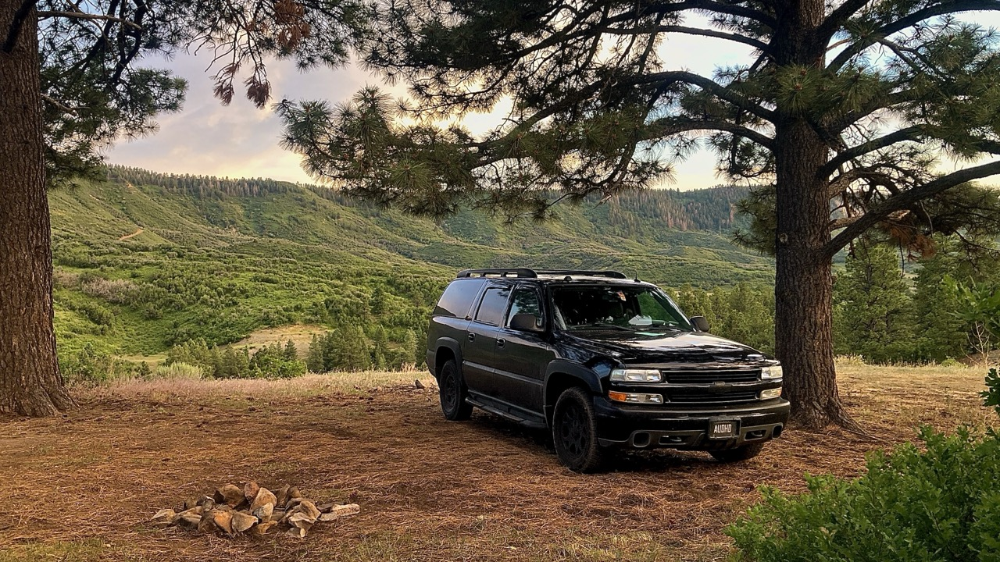

Platform
- Year
- 2004
- Make
- Chevrolet
- Model
- Suburban 1500 Z71
- Drive
- Four-wheel drive
- Chassis
- GMT800
- Body
- Four-door full-size SUV

Home • Workshop • Basecamp
A 2004 Chevrolet Suburban Z71 rebuilt into a full-time home, backcountry basecamp, mobile studio, and the machine that carried me out of Florida and into the San Juan Mountains.
The truck
Horizon is not a polished show build. It is a working truck that carries a bedroom, kitchen, power system, communications gear, tools, recovery equipment, water, food, and nearly everything I need to live away from pavement for days or weeks at a time.
Every part of the build has been shaped by real use. Washboard roads, rutted forest tracks, winter weather, summer heat, long highway drives, repairs in parking lots, and the constant need to make a small space work harder without making it feel crowded.
Specification sheet
Chassis and road gear


I bought Horizon in 2024 in the parking lot of the Bass Pro Shops in Fort Myers, Florida. It had originally come from Minnesota, where it belonged to an older couple who had retired, moved on to sports cars, and no longer needed a full-size Suburban.
I handed over $4,500 in cash, climbed into a truck I barely knew, and drove it back across Florida to Windermere. At the time I had been living beside my storage unit in a financed 2017 Chevrolet Malibu. I was preparing to let the Malibu go back to the finance company, and Horizon represented something completely different. It was paid for. It had room. It could leave pavement. Most importantly, it could become a home instead of simply being a car I happened to sleep in.
The first version of the build was direct and practical. I removed every rear seat, laid out a full-size mattress, cut it to fit the interior, and supported it on top of rows of seven-inch-high storage containers. It was not elegant, but for the first time I could stretch out properly and keep the basics of my life organized underneath me.
The build changed as I learned what daily life actually required. I added interior walls and a compact kitchen directly behind the driver’s seat. A rice cooker and small portable oven handled simple meals. Later, an induction cooktop became the main cooking surface, powered by the Bluetti Elite 200 V2. At camp, the power station can charge from a 400-watt Renogy folding solar panel. While driving, a Bluetti DC-to-DC charger turns road time into charging time.
Water capacity grew from the original seven-gallon setup to a ten-gallon tank. An ICECO JP30 portable refrigerator replaced the center console, putting cold food within reach from the driver’s seat and using one of the most valuable spaces in the truck more efficiently.
Horizon still had its factory rear-entertainment system, including the small monitor and DVD player. I connected a Nintendo Wii through the auxiliary input, which means the same truck that crawls down forest roads can also become a tiny Mario Kart room when the weather turns bad.
Two storage boxes are mounted on the roof. They carry recovery gear, tools, a tarp, camping chair, grilling supplies, extra food, coffee, and the things that are useful at camp but do not need to occupy the living space. A Starlink Mini V1 sits ahead of them, giving the truck an internet connection from places where phone service disappears.
Horizon eventually carried me away from Florida, through familiar forests in North Carolina, across the Black Hills, and into Colorado. It is the room where I sleep, the kitchen where I cook, the office where I design, the communications station I keep expanding, and the machine that takes me to the quiet places where my nervous system can finally settle down.
Living system
A cut-to-fit full-size mattress forms the center of the interior, with storage beneath and blackout coverage for privacy, warmth, and a more controlled sensory environment.
The compact kitchen includes an induction cooktop, rice cooker, portable oven, food storage, water, and an ICECO JP30 refrigerator installed where the center console once lived.
The Bluetti Elite 200 V2 supports cooking, refrigeration, electronics, and camp life. Charging comes from folding solar, hood-mounted solar, or the vehicle while driving.
Starlink Mini, an external dual-SIM LTE router, rooftop antennas, radio equipment, and planned scanner systems make Horizon both a mobile office and a backcountry communications platform.
The factory rear monitor can display a Nintendo Wii through the auxiliary input. Mario Kart in a Suburban is unnecessary, which is exactly why it belongs here.
Roof boxes move recovery equipment, tools, food, coffee, camp furniture, tarps, and outdoor supplies out of the living space without leaving them behind.
Recovery and repair
Horizon carries the equipment needed to handle routine repairs, rough-road problems, camp setup, and vehicle recovery without assuming help will be nearby.
Gallery


Still evolving
Every trip exposes another weakness, inspires another improvement, or proves that something simple works better than something fancy. The build continues one repair, one road, and one idea at a time.